4. The model of an action
Let’s return to the architecture of an ASP.NET MVC application:
 |
In the previous chapter, we looked at the process that routes the request [1] to the controller and action [2a] that will handle it, a mechanism known as routing. We also presented the various responses an action can send back to the browser. So far, we have presented actions that did not process the request presented to them. A request [1] carries various pieces of information that ASP.NET MVC presents [2a] to the action in the form of a model. This term should not be confused with the M model of a V view [2c] that is produced by the action:
 |
- the client’s HTTP request arrives at [1];
- in [2], the information contained in the request is transformed into an action model [3], often but not necessarily a class, which serves as input to the action [4];
- at [4], the action, based on this model, generates a response. This response has two components: a view V [6] and the model M of this view [5];
- the view V [6] will use its model M [5] to generate the HTTP response intended for the client.
In the MVC model, the action [4] is part of the C (controller), the view model [5] is the M, and the view [6] is the V.
This chapter examines the mechanisms for linking the information carried by the request—which is inherently strings—to the action model, which can be a class with properties of various types.
4.1. Initializing Action Parameters
We add [1] a new basic ASP.NET MVC project to the existing solution:
 |
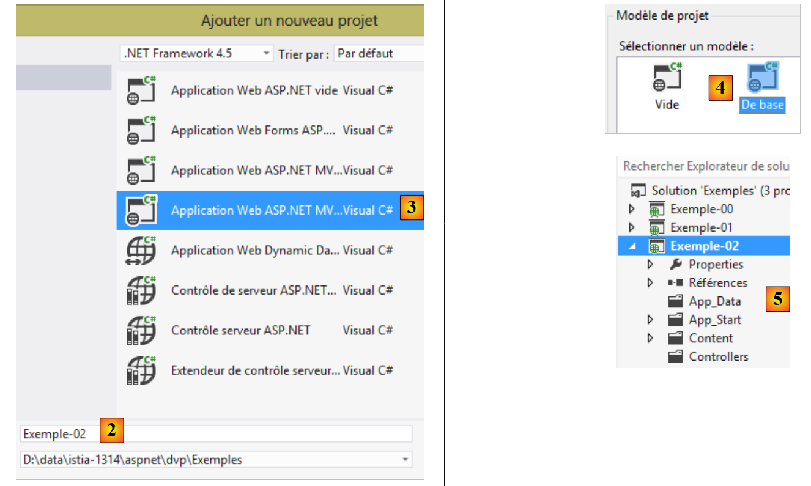 |
- in [2], the name of the new project;
- in [3, 4], we select a basic ASP.NET MVC project;
- in [5], the new project.
We will make the new project the startup project for the solution.
As done in Section 3.1, we create a controller named [First] [1]:
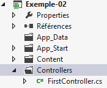
In this controller, we create the following action [Action01]:
using System.Web.Mvc;
namespace Example_02.Controllers
{
public class FirstController : Controller
{
// Action01
public ContentResult Action01(string name)
{
return Content(string.Format("Controller=First, Action=Action01, name={0}", name));
}
}
}
The new feature is on line 8: the [Action01] method has a parameter. In this chapter, we will explore the different ways to initialize an action's parameters. The [name] parameter above is initialized in order with the following values:
Request.Form["name"] | a parameter named [name] sent by a POST request |
RouteData.Values["name"] | a URL element named [name] |
Request.QueryString["name"] | a parameter named [name] sent by a GET request |
Request.Files["name"] | an uploaded file named [name] |
Let’s examine these different cases. Let’s enter the URL [/First/Action01?name=someone] directly into the browser. We get the following response:

The browser’s HTTP request was as follows:
- Line 1: The request is a GET. The requested URL includes the [name] parameter. On the server side, the request is routed to the [Action01] action, which has the following signature:
public ContentResult Action01(string name)
To assign a value to the name parameter, ASP.NET MVC checks the following values in order: *Request.Form["name"], RouteData.Values["name"],* *<span style="color: #2323dc">Request.QueryString["name"]</span>**, Request.Files["name"]*. It stops as soon as it finds a value. The [name] parameter embedded in the GET URL has been placed by the framework in Request.QueryString["name"]. It is with this value [someone] that the [name] parameter of [Action01] will be initialized. Then the code of [Action01] executes:
return Content(string.Format("Controller=First, Action=Action01, name={0}", name), "text/plain", Encoding.UTF8);
This code provides the response sent to the client:

Note: The parameter binding mechanism is case-insensitive. So if our action is defined as:
public ContentResult Action01(string NAME)
and the parameter passed is [?Name=zébulon], the binding will still occur. The [Name] parameter of [Action01] will receive the value [zébulon].
Now, let’s request the same URL with a POST. To do this, we’ll use the [Advanced Rest Client] application:
 |
- in [1], the requested URL;
- in [2], the POST method will be used;
- in [3], the POST parameters.
Let’s send this request and look at the HTTP logs. The HTTP request is as follows:
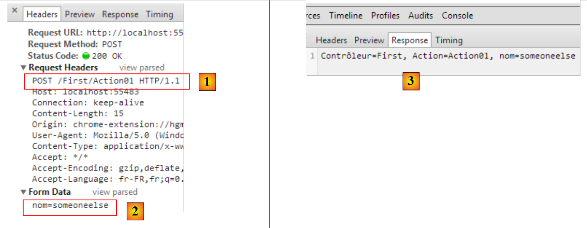 |
- in [1], the POST;
- in [2], the POST parameters. Technically, they were sent after the HTTP headers, following the blank line indicating the end of those headers;
- in [3], the response received. We successfully retrieve the [name] parameter from the POST. Among the values tested for the name parameter—Request.Form["name"], RouteData.Values["name"], Request.QueryString["name"], Request.Files["name"]—the first one worked.
Now, let’s modify the default route in [App_Start/RouteConfig]. Currently, this route is as follows:
routes.MapRoute(
name: "Default",
url: "{controller}/{action}/{id}",
defaults: new { controller = "Home", action = "Index", id = UrlParameter.Optional }
);
Let's change it to:
routes.MapRoute(
name: "Default",
url: "{controller}/{action}/{name}",
defaults: new { controller = "Home", action = "Index", name = UrlParameter.Optional }
);
- In line 3, we named the third element of a route [name];
- line 4, this element is declared optional.
Now, let’s recompile the application and request the URL [/First/Action01/zébulon] directly in the browser. We get the following response:

Among the values tested for the "name" parameter—Request.Form["name"], RouteData.Values["name"], Request.QueryString["name"], Request.Files["name"]—the second one worked.
Let’s make the same request using a POST request and [Advanced Rest Client]:
 |
- In [1], we assigned a value to the {name} element of the route;
- in [2], we add a [name] parameter to the posted request;
- the response obtained is in [3].
Of the values tested for the [name] parameter—Request.Form["name"], RouteData.Values["name"], Request.QueryString["name"], Request.Files["name"]—two were valid: the first two. The first one was used.
4.2. Validating Action Parameters
If an action has a parameter named [p], ASP.NET MVC will attempt to assign one of the following values to it: Request.Form["p"], RouteData.Values["p"], Request.QueryString["p"], or Request.Files["p"]. The first three values are strings. If the [p] parameter is not of type [string], problems may arise.
Let’s create the following new action:
// Action02
public ContentResult Action02(int age)
{
string text = string.Format("Controller={0}, Action={1}, age={2}", RouteData.Values["controller"], RouteData.Values["action"], age);
return Content(text, "text/plain", Encoding.UTF8);
}
- Line 2: The action [Action02] accepts a parameter named [age] of type int. The retrieved string must be convertible to int.
Let’s request the URL [http://localhost:55483/First/Action02?age=21]. We get the following page:

Let's request the URL [http://localhost:55483/First/Action02?age=21x]. We get the following page:
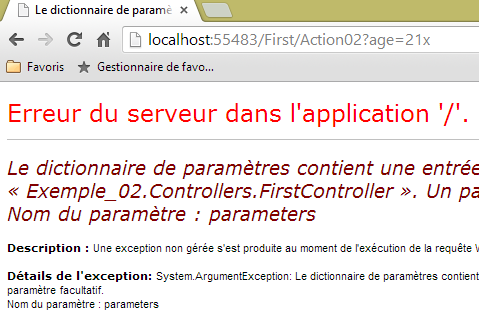
This time, we received an error page. It is interesting to look at the HTTP headers sent by the server in this case:
- Line 1: The server responded with a [500 Internal Server Error] code and sent an HTML page (line 3) of 12,438 bytes (line 5) to explain the possible reasons for this error.
Now let's create the following [Action03] action:
// Action03
public ContentResult Action03(int? age)
{
...
}
[Action03] is identical to [Action02] except that we changed the type of the [age] parameter to int?, which means integer or null.
Let’s request the URL [http://localhost:55483/First/Action03?age=21x]. We get the following page:

ASP.NET MVC was unable to convert [21x] to an int type. It therefore assigned the value null to the [age] parameter, as permitted by its int? type. However, it is possible to determine whether the parameter received a value from the request or not.
We create the following new action [Action04]:
// Action04
public ContentResult Action04(int? age)
{
bool valid = ModelState.IsValid;
string text = string.Format("Controller={0}, Action={1}, age={2}, valid={3}", RouteData.Values["controller"], RouteData.Values["action"], age, valid);
return Content(text, "text/plain", Encoding.UTF8);
}
- Line 2: We have kept the [int?] type. This specifically allows the request to omit the [age] parameter, which then receives the null value;
- line 4: we check if the action model is valid. The action model consists of all its parameters, in this case [age]. The model is valid if all parameters were able to obtain a value from the request or the null value if the parameter type allows it;
- Line 5: We add the value of the [valid] variable to the text sent to the client.
Let’s request the URL [http://localhost:55483/First/Action04?age=21x]. We get the following page:

ASP.NET MVC was unable to convert [21x] to type int. It therefore assigned the value null to the [age] parameter, as permitted by its int? type. However, there were conversion errors, as shown by the value of [valid].
It is possible to get the error message associated with a failed conversion. Let’s examine the following new action:
// Action05
public ContentResult Action05(int? age)
{
string errors = getErrorMessagesFor(ModelState);
string text = string.Format("Controller={0}, Action={1}, age={2}, valid={3}, errors={4}", RouteData.Values["controller"], RouteData.Values["action"], age, ModelState.IsValid, errors);
return Content(text, "text/plain", Encoding.UTF8);
}
The new feature is on line 4. Here, we call a private method [getErrorMessagesFor] and pass it the action's model state. It returns a string containing all the error messages that occurred. This method is as follows:
private string getErrorMessagesFor (ModelStateDictionary state)
{
List<String> errors = new List<String>();
string messages = string.Empty;
if (!state.IsValid)
{
foreach (ModelState modelState in state.Values)
{
foreach (ModelError error in modelState.Errors)
{
errors.Add(getErrorMessageFor(error));
}
}
foreach (string message in errors)
{
messages += string.Format("[{0}]", message);
}
}
return messages;
}
- line 1: the actual [ModelState] parameter passed to the method is of type [ModelStateDictionary];
- line 3: a list of error messages, initially empty;
- line 5: we check whether the state passed as a parameter is valid or not. If not, then we will aggregate all error messages into a single string;
- line 7: the [ModelStateDictionary] type has a [Values] property, which is a collection of [ModelState] types. There is one [ModelState] per model element. For example:
- ModelState["age"]: the model state of the action for the [age] parameter,
- ModelState["age"].Errors: the collection of errors for this parameter. The errors are of type [ModelError],
- ModelState["age"].Errors[i].ErrorMessage: the error message (if any) for parameter [age] of the model
- ModelState["age"].Errors[i].Exception: the exception for error #i in the error collection for the [age] parameter,
- ModelState["age"].Errors[i].Exception.InnerException: the cause of this exception,
- ModelState["age"].Errors[i].Exception.InnerException.Message: the message of the cause of the exception;
- line 9: we iterate through the [Errors] collection of a specific [ModelState];
- line 11: retrieve the error message from a specific [ModelError] and add it to the list of error messages from line 3;
- lines 14–17: the elements of the error message list are concatenated into a single string.
The [getErrorMessageFor] method on line 11 is as follows:
private string getErrorMessageFor(ModelError error)
{
if (error.ErrorMessage != null && error.ErrorMessage.Trim() != string.Empty)
{
return error.ErrorMessage;
}
if (error.Exception != null && error.Exception.InnerException == null && error.Exception.Message != string.Empty)
{
return error.Exception.Message;
}
if (error.Exception != null && error.Exception.InnerException != null && error.Exception.InnerException.Message != string.Empty)
{
return error.Exception.InnerException.Message;
}
return string.Empty;
}
- Line 1: We receive a [ModelError] type that encapsulates an error on one of the elements of the action's model. We retrieve the error message from three different locations:
- in [ModelError].ErrorMessage, lines 3–6;
- in [ModelError].Exception.Message, lines 7–10;
- in [ModelError].Exception.InnerException.Message, lines 11–14;
During testing, we notice that the error message is found in these three locations depending on the nature of the model element. There must be a rule that guarantees we can obtain the error message associated with a model element, but I don’t know it. So I search for it in the various places where I can find it, following a specific order. As soon as a non-empty message is found, it is returned.
Let’s request the URL [http://localhost:55483/First/Action05?age=21x]. We get the following page:

4.3. An action with multiple parameters
Consider the following new action:
// Action06
public ContentResult Action06(double? weight, int? age)
{
string errors = getErrorMessagesFor(ModelState);
string text = string.Format("Controller={0}, Action={1}, weight={2}, age={3}, valid={4}, errors={5}", RouteData.Values["controller"], RouteData.Values["action"], weight, age, ModelState.IsValid, errors);
return Content(text, "text/plain", Encoding.UTF8);
}
- Line 2: We have two parameters [weight] and [age].
The rules described above now apply to both parameters. Here are some examples of execution:
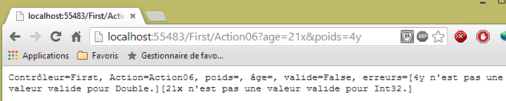

4.4. Using a class as an action model
Let’s define a class that will serve as the model for an action. We’ll place it in the [Models] folder [1].
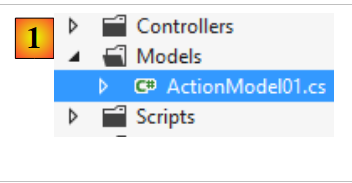 |
Its code will be as follows:
namespace Example_02.Models
{
public class ActionModel01
{
public double? Weight { get; set; }
public int? Age { get; set; }
}
}
Our class has as automatic properties the two parameters [Weight] and [Age] discussed earlier. This class will be the input parameter for the action [Action07]:
// Action07
public ContentResult Action07(ActionModel01 model)
{
string errors = getErrorMessagesFor(ModelState);
string text = string.Format("Controller={0}, Action={1}, weight={2}, age={3}, valid={4}, errors={5}", RouteData.Values["controller"], RouteData.Values["action"], model.Weight, model.Age, ModelState.IsValid, errors);
return Content(text, "text/plain", Encoding.UTF8);
}
- Line 2: The action model is an instance of type [ActionModel01].
Let’s revisit the same two examples as before:

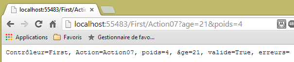
Note that parameter binding is case-insensitive. The request parameters were [age] and [weight]. They populated the [Age] and [Weight] properties of the [ModelAction01] class.
Furthermore, we have so far used [GET] HTTP requests. Let’s show that [POST] requests behave the same way. To do this, let’s use the [Advanced Rest Client] application again:
 |
- in [1], the requested URL;
- in [2], it will be sent via a POST request;
- in [3], the POST parameters.
We get the same response as with the GET request:

4.5. Action model with validation constraints - 1
Using the previous model:
namespace Example_02.Models
{
public class ActionModel01
{
public double? Weight { get; set; }
public int? Age { get; set; }
}
}
The [weight] and [age] parameters may be omitted from the request. In this case, the [Weight] and [Age] properties are set to [null], and no error is reported. You might want to transform the model as follows:
namespace Example_02.Models
{
public class ActionModel01
{
public double Weight { get; set; }
public int Age { get; set; }
}
}
Lines 5 and 6: the [Weight] and [Age] properties can no longer have the value [null]. Let's see what happens with this new model when the [weight] and [age] parameters are missing from the request.
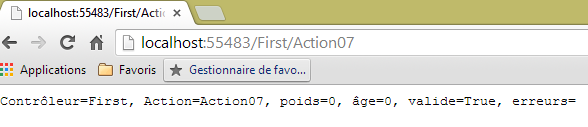
There were no errors, and the [Weight] and [Age] properties retained their initialization value: 0. ASP.NET MVC:
- created an instance of the model using `new ActionModel01`. This is where the [Weight] and [Age] properties were assigned the value 0;
- did not assign any values to these two properties because there were no parameters with those names.
The first model allows us to check for the absence of a parameter: the corresponding property then has the value [null]. The second does not allow this. It is possible to add validation constraints beyond the simple type of the parameters. We will now present them.
Consider the following new action model:

using System.ComponentModel.DataAnnotations;
namespace Example_02.Models
{
public class ActionModel02
{
[ Required ]
[Range(1, 200)]
public double? Weight { get; set; }
[Required]
[Range(1, 150)]
public int Age { get; set; }
}
}
- line 6: indicates that the [Weight] field is required;
- line 7: indicates that the [Weight] field must be in the range [1,200];
- line 9: indicates that the [Age] field is required;
- line 7: indicates that the [Age] field must be within the range [1,150];
The action using this template will be the following [Action08]:
// Action08
public ContentResult Action08(ActionModel02 model)
{
string errors = getErrorMessagesFor(ModelState);
string text = string.Format("Controller={0}, Action={1}, weight={2}, age={3}, valid={4}, errors={5}", RouteData.Values["controller"], RouteData.Values["action"], model.Weight, model.Age, ModelState.IsValid, errors);
return Content(text, "text/plain", Encoding.UTF8);
}
- Line 2: The action receives an instance of the model [ActionModel02];
Let's run some tests:

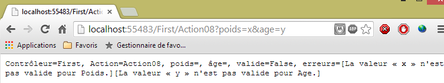

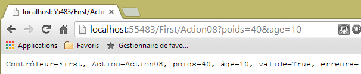
Errors are detected correctly. Now, let's update the model as follows:
using System.ComponentModel.DataAnnotations;
namespace Example_02.Models
{
public class ActionModel02
{
[Required]
[Range(1, 200)]
public double Weight { get; set; }
[Required]
[Range(1, 150)]
public int Age { get; set; }
}
}
Lines 8 and 11: the properties can no longer have the value [null]. Let’s compile and run the test again without parameters:
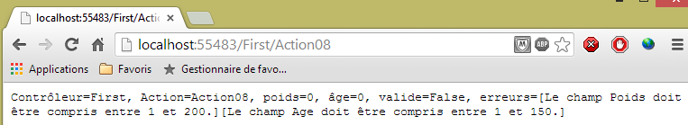
The absence of parameters caused the [Weight] and [Age] properties to retain the value they acquired when the model was instantiated: 0. Validation then occurs. The [Required] attribute is then satisfied. We can see that the error message above is for the [Range] attribute. Therefore, to check for the presence of a parameter, the associated property must be nullable, i.e., it must be able to accept the value null.
Let’s return to the initial [ActionModel02] model and consider an action whose model consists of an [ActionModel02] instance and a nullable [DateTime] type:
// Action09
public ContentResult Action09(ActionModel02 model, DateTime? date)
{
string errors = getErrorMessagesFor(ModelState);
string text = string.Format("Controller={0}, Action={1}, weight={2}, age={3}, date={4}, valid={5}, errors={6}", RouteData.Values["controller"], RouteData.Values["action"], model.Weight, model.Age, date, ModelState.IsValid, errors);
return Content(text, "text/plain", Encoding.UTF8);
}
Let's run a few tests:

We did not pass any parameters to the action. The [Required] attributes on the [Weight] and [Age] properties did their job. The date, however, received the null value and no errors were reported.
Now let’s pass invalid parameters:

Now let’s pass valid values:

Let’s examine other validation constraints. The new action model is as follows:

using System.ComponentModel.DataAnnotations;
namespace Example_02.Models
{
public class ActionModel03
{
[Required(ErrorMessage = "The email parameter is required")]
[EmailAddress(ErrorMessage = "The email parameter is not in a valid format")]
public string Email { get; set; }
[Required(ErrorMessage = "The day parameter is required")]
[RegularExpression(@"^\d{1,2}$", ErrorMessage = "The day parameter must be 1 or 2 digits")]
public string Day { get; set; }
[Required(ErrorMessage = "The info1 parameter is required")]
[MaxLength(4, ErrorMessage = "The info1 parameter cannot be longer than 4 characters")]
public string Info1 { get; set; }
[Required(ErrorMessage = "The info2 parameter is required")]
[MinLength(2, ErrorMessage = "The info2 parameter must be at least 2 characters long")]
public string Info2 { get; set; }
[Required(ErrorMessage = "The info3 parameter is required")]
[MinLength(4, ErrorMessage = "The info3 parameter must be exactly 4 characters long")]
[MaxLength(4, ErrorMessage = "The info3 parameter must be exactly 4 characters long")]
public string Info3 { get; set; }
}
}
- line 6: the [Required] attribute, this time with an error message that we define ourselves;
- line 7: the [EMailAddress] attribute requires that the [Email] field contain a valid email address;
- line 11: the [RegularExpression] attribute requires that the [Day] field contain a string of one or two digits. The first parameter is the regular expression that the field must validate against;
- line 15: the [MaxLength] attribute requires that the [Info1] field have no more than 4 characters;
- line 19: the [MinLength] attribute requires that the [Info2] field have at least 2 characters;
- lines 23-24: the combined [MaxLength] and [MinLength] attributes require that the [Info3] field have exactly 4 characters;
Action [Action10] will use this template:
// Action10
public ContentResult Action10(ActionModel03 model)
{
string errors = getErrorMessagesFor(ModelState);
string text = string.Format("email={0}, day={1}, info1={2}, info2={3}, info3={4}, errors={5}",
model.Email, model.Day, model.Info1, model.Info2, model.Info3, errors);
return Content(text, "text/plain", Encoding.UTF8);
}
Let's run some tests with this action.
First, without parameters:

Then with invalid parameters:

Then with valid parameters:

4.6. Action model with validity constraints - 2
We introduce additional integrity constraints. The new action model will be the following [ActionModel04] class:
 |
using System.ComponentModel.DataAnnotations;
namespace Example_02.Models
{
public class ActionModel04
{
[Required(ErrorMessage="The url parameter is required")]
[Url(ErrorMessage="Invalid URL")]
public string Url { get; set; }
[Required(ErrorMessage = "The info1 parameter is required")]
public string Info1 { get; set; }
[Required(ErrorMessage = "The info2 parameter is required")]
[Compare("Info1", ErrorMessage = "The info1 and info2 parameters must be identical")]
public string Info2 { get; set; }
[Required(ErrorMessage = "The cc parameter is required")]
[CreditCard(ErrorMessage = "The cc parameter is not a valid credit card number")]
public string Cc { get; set; }
}
}
- line 8: requires that the annotated field be a valid URL;
- line 13: requires that the [Info1] and [Info2] properties have the same value;
- line 16: requires that the annotated field be a valid credit card number.
The action using this template will be as follows:
// Action11
public ContentResult Action11(ActionModel04 model)
{
string errors = getErrorMessagesFor(ModelState);
string text = string.Format("URL={0}, Info1={1}, Info2={2}, CC={3}, errors={4}",
model.Url, model.Info1, model.Info2, model.Cc, errors);
return Content(text, "text/plain", Encoding.UTF8);
}
To test the [Action11] action, we use the [Advanced Rest Client] application:
 |
- in [1], the URL of the [Action11] action;
- in [2], this URL will be requested with a POST;
- in [3], select the [Form] tab;
- in [4], the values of the four expected parameters. This initialization is a feature provided by [ARC]. The parameters actually sent can be viewed in the [Raw] tab [5];
 |
- in [6], the POST parameters.
For this request, we receive the following response:
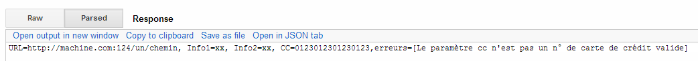
Let’s pass invalid parameters:

We then get the following response:

4.7. Action model with validity constraints - 3
Sometimes the available integrity constraints aren't enough. In that case, you can create your own. In particular, you can use a model that implements the [IValidatableObject] interface. In this case, you add your own model validations to the [Validate] method of this interface. Let's look at an example. The new action model will be the following [ActionModel05] class:
 |
using System.Collections.Generic;
using System.ComponentModel.DataAnnotations;
namespace Example_02.Models
{
public class ActionModel05 : IValidatableObject
{
[Required(ErrorMessage = "The rate parameter is required")]
public double? Rate { get; set; }
public IEnumerable<ValidationResult> Validate(ValidationContext validationContext)
{
List<ValidationResult> results = new List<ValidationResult>();
bool ok = Rate < 4.2 || Rate > 6.7;
if (!ok)
{
results.Add(new ValidationResult("The rate parameter must be < 4.2 or > 6.7", new string[] { "Rate" }));
}
return results;
}
}
}
- line 6: the model implements the [IValidatableObject] interface;
- line 10: the [Validate] method of this interface. It returns a collection of elements of type [ValidationResult]. This type encapsulates the errors to be reported;
- line 9: a valid rate is a rate <4.2 or > 6.7;
- line 12: we create an empty list of elements of type [ValidationResult];
- line 13: we check the validity of the [Rate] property;
- lines 14–17: if the [Rate] property is invalid, then an element of type [ValidationResult] is added to the results list. The first parameter is an error message. The second parameter, which is optional, is a collection of the properties affected by this error.
The action using this model will be as follows:
// Action12
public ContentResult Action12(ActionModel05 model)
{
string errors = getErrorMessagesFor(ModelState);
string text = string.Format("rate={0}, errors={1}", model.Rate, errors);
return Content(text, "text/plain", Encoding.UTF8);
}
Here is an example of execution:

4.8. Action model of type Table or List
Consider the following action [Action13]:
// Action13
public ContentResult Action13(string[] data)
{
string strData = "";
if (data != null && data.Length != 0)
{
strData = string.Join(",", data);
}
string text = string.Format("data=[{0}]", strData);
return Content(text, "text/plain", Encoding.UTF8);
}
- Line 2: The action model consists of an array of [string]. It allows us to retrieve a parameter named [data], which may appear multiple times in the request parameters, such as in [?data=data1&data=data2&data=data3]. The various [data] parameters in the request will populate the [data] array in the action model. This scenario occurs with dropdown lists. The browser then sends the different values selected by the user, all with the same parameter name.
Here is an example:

The model can also be a list:
// Action14
public ContentResult Action14(List<int> data)
{
string errors = getErrorMessagesFor(ModelState);
string strData = "";
if (data != null && data.Count != 0)
{
strData = string.Join(",", data);
}
string text = string.Format("data=[{0}], errors=[{1}]", strData, errors);
return Content(text, "text/plain", Encoding.UTF8);
}
The model here is a list of integers (line 2). Here is the first run:

and a second one:
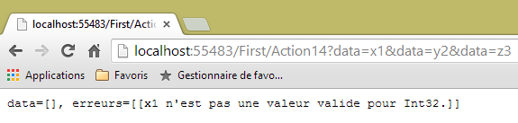
4.9. Filtering an action model
Sometimes we have a model but want only certain elements of the model to be initialized by the HTTP request. Consider the following action model [ActionModel06]:
using System.ComponentModel.DataAnnotations;
using System.Web.Mvc;
namespace Example_02.Models
{
[Bind(Exclude = "Info2")]
public class ActionModel06
{
[Required(ErrorMessage = "The [info1] parameter is required")]
public string Info1 { get; set; }
public string Info2 { get; set; }
}
}
- lines 9-10: the [info1] parameter is required;
- line 6: the [info2] parameter on line 12 is excluded from the binding of the HTTP request to its model.
The action will be as follows [Action15]:
// Action15
public ContentResult Action15(ActionModel06 model)
{
string errors = getErrorMessagesFor(ModelState);
string text = string.Format("valid={0}, info1={1}, info2={2}, errors={3}", ModelState.IsValid, model.Info1, model.Info2, errors);
return Content(text, "text/plain", Encoding.UTF8);
}
Here is an example of execution:
 |
- in [1]: we pass the [info2] parameter in the URL;
- in [2]: the [Info2] property of the action model remains empty.
4.10. Extending the data binding model
Let’s revisit the execution architecture of an action:
 |
The action class is instantiated at the start of the client request and destroyed at the end of it. Therefore, it cannot be used to store data between requests, even if it is called repeatedly. You may want to store two types of data:
- data shared by all users of the web application. This is generally read-only data. Three files are used to implement this data sharing:
- [Web.Config]: the application configuration file
- [Global.asax, Global.asax.cs]: allow you to define a class, called the global application class, whose lifetime is that of the application, as well as handlers for certain events of that same application.
The global application class allows you to define data that will be available for all requests from all users.
- data shared across requests from the same client. This data is stored in an object called a Session. We refer to this as the client session to denote the client’s memory. All requests from a client have access to this session. They can store and read information there.
 |
Above, we show the types of memory an action has access to:
- the application’s memory, which mostly contains read-only data and is accessible to all users;
- a specific user’s memory, or session, which contains read/write data and is accessible to successive requests from the same user;
- not shown above, there is a request memory, or request context. A user’s request may be processed by several successive actions. The request context allows Action 1 to pass information to Action 2.
Let’s look at a first example illustrating these different types of memory:
First, we modify the [Web.config] file of the [Example-02] project as follows:
<appSettings>
<add key="webpages:Version" value="2.0.0.0" />
...
<add key="appInfo1" value="appInfo1"/>
</appSettings>
We add line 4, which associates the value [infoAppli1] with the key [infoAppli1]. This will be our [Application] scope data: it will be accessible to all requests from all users.
Next, we modify the [Application_Start] method in the [Global.asax] file. This method runs once when the application starts. This is where we need to use the [Web.config] file:
protected void Application_Start()
{
AreaRegistration.RegisterAllAreas();
WebApiConfig.Register(GlobalConfiguration.Configuration);
FilterConfig.RegisterGlobalFilters(GlobalFilters.Filters);
RouteConfig.RegisterRoutes(RouteTable.Routes);
BundleConfig.RegisterBundles(BundleTable.Bundles);
// Initialize application
Application["infoApp1"] = ConfigurationManager.AppSettings["infoApp1"];
}
We add line 10. It does two things:
- it retrieves the value of the [infoAppli1] key from the [Web.config] file using the [System.Configuration.ConfigurationManager] class;
- it stores it in the [HttpApplication.Application] dictionary, associated with the [infoAppli1] key. All actions have access to this dictionary.
In the same [Global.asax] file, we add the following [Session_Start] method:
protected void Session_Start()
{
// initialize counter
Session["counter"] = 0;
}
The [Session_Start] method is executed for every new user. What is a new user? A user is "tracked" by a session token. This token is:
- created by the web server and sent to the new user in the HTTP headers of the first response sent to them;
- sent back by the user’s browser with every new request they make. This allows the server to recognize the user and manage a memory space for them called the user’s session.
The web server recognizes that it is dealing with a new user when the user does not send a session token. The server then creates one for them.
In line 4 above, we place a counter in the user’s session that will be incremented with each request from that user. This illustrates the memory associated with a user. The [Session] class is used like a dictionary (line 4).
With that done, we write the following [Action16] action:
// Action16
public ContentResult Action16()
{
// retrieve the HTTP request context
HttpContextBase context = ControllerContext.HttpContext;
// retrieve the Application scope information
string appInfo1 = context.Application["appInfo1"] as string;
// and those in the Session scope
int? counter = context.Session["counter"] as int?;
counter++;
context.Session["counter"] = counter;
// the response to the client
string text = string.Format("appInfo1={0}, counter={1}", appInfo1, counter);
return Content(text, "text/plain", Encoding.UTF8);
}
- line 5: we retrieve the context of the HTTP request currently being processed. This context will give us access to data in the [Application] and [Session] scopes;
- line 7: we retrieve the [Application] scope information;
- line 9: we retrieve the counter from the session;
- lines 10–11: it is incremented and then stored back in the session;
- Lines 13–14: Both pieces of information are sent to the client.
Here are some examples of execution:
[Action16] is requested once [1], then the page is refreshed [F5] twice [2]:
 |
In [2], the client made a total of three requests. Each time, it was able to retrieve the counter updated by the previous request.
To simulate a second user, we use a second browser to request the same URL:
 |
In [3], the second user successfully retrieves the same [Application] scope information but has their own [Session] scope counter.
Let’s return to the code for action [Action16]:
// Action16
public ContentResult Action16()
{
// retrieve the HTTP request context
HttpContextBase context = ControllerContext.HttpContext;
// retrieve Application scope information
string appInfo1 = context.Application["appInfo1"] as string;
// and Session-scope information
int? counter = context.Session["counter"] as int?;
counter++;
context.Session["counter"] = counter;
// the response to the client
string text = string.Format("appInfo1={0}, counter={1}", appInfo1, counter);
return Content(text, "text/plain", Encoding.UTF8);
}
One of the goals of the ASP.NET MVC framework is to make controllers and actions testable in isolation without a web server. However, as seen in line 5, the HTTP request context is required to retrieve data from the [Application] and [Session] scopes. We propose creating a new action [Action17] that would receive [Application] and [Session] scope data as parameters:
// Action17
public ContentResult Action17(ApplicationModel applicationData, SessionModel sessionData)
{
// Retrieve the Application scope information
string appInfo1 = applicationData.InfoAppli1;
// and the Session scope information
int counter = sessionData.Counter++;
// the response to the client
string text = string.Format("AppInfo1={0}, counter={1}", AppInfo1, counter);
return Content(text, "text/plain", Encoding.UTF8);
}
The code no longer has any dependencies on the HTTP request. It can therefore be tested independently of a web server.
Let’s see how to do this. First, we need to create the [ApplicationModel] and [SessionModel] classes, which will encapsulate the [Application] and [Session] scope data, respectively. They are as follows:
 |
namespace Example_02.Models
{
public class ApplicationModel
{
public string AppInfo1 { get; set; }
}
}
namespace Example_02.Models
{
public class SessionModel
{
public int Counter { get; set; }
public SessionModel()
{
Counter = 0;
}
}
}
Next, we need to modify the [Application_Start] and [Session_Start] methods in the [Global.asax] file:
public class MvcApplication : System.Web.HttpApplication
{
protected void Application_Start()
{
AreaRegistration.RegisterAllAreas();
WebApiConfig.Register(GlobalConfiguration.Configuration);
FilterConfig.RegisterGlobalFilters(GlobalFilters.Filters);
RouteConfig.RegisterRoutes(RouteTable.Routes);
BundleConfig.RegisterBundles(BundleTable.Bundles);
// Application initialization - Case 1
Application["infoApp1"] = ConfigurationManager.AppSettings["infoApp1"];
// Application initialization - case 2
ApplicationModel data = new ApplicationModel();
data.InfoApp1 = ConfigurationManager.AppSettings["infoApp1"];
Application["data"] = data;
}
protected void Session_Start()
{
// initialize counter - case 1
Session["counter"] = 0;
// initialize counter - case 2
Session["data"] = new SessionModel();
}
}
- line 14: an instance of [ApplicationModel] is created;
- line 15: it is initialized;
- line 16: and placed in the [Application] dictionary, associated with the key [data]. [Application] is a property of the [HttpApplication] class from line 1;
- line 24: an instance of [SessionModel] is created and placed in the [Session] dictionary, associated with the key [data]. [Session] is a property of the [HttpApplication] class from line 1;
Based on what we have seen so far, the signature
public ContentResult Action17(ApplicationModel applicationData, SessionModel sessionData)
means that the HTTP request processed by the action must include parameters named [applicationData] and [sessionData]. This will not be the case. We must create a new data binding model so that when an action receives a type as a parameter:
- [ApplicationModel], the data with scope [Application] and key [data] is provided to it;
- [SessionModel], the data with scope [Session] and key [data] is provided to it.
To do this, we need to create classes that implement the [IModelBinder] interface.
We start by creating an [Infrastructure] folder in the [Example-02] project:

In it, we create the following [ApplicationModelBinder] class:
using System.Web.Mvc;
namespace Example_02.Infrastructure
{
public class ApplicationModelBinder : IModelBinder
{
public object BindModel(ControllerContext controllerContext, ModelBindingContext bindingContext)
{
// retrieve the data from the [Application] scope
return controllerContext.RequestContext.HttpContext.Application["data"];
}
}
}
- line 5: the class implements the [IModelBinder] interface. To understand its code, you need to know that it will be called every time an action has a parameter of type [ApplicationModel]. This binding [ApplicationModel] --> [ApplicationModelBinder] will be established when the application starts, in the [Application_Start] method of [Global.asax];
- line 7: the only method of the [IModelBinder] interface;
- Line 7: The [ControllerContext] parameter gives us access to the HTTP request currently being processed;
- line 7: the parameter of type [ModelBindingContext] gives us access to information about the model to be constructed, in this case the type [ApplicationModel];
- line 7: the result of [BindModel] is the object that will be assigned to the bound parameter, here a parameter of type [ApplicationModel];
- line 10: we simply return the object with scope [Application] and key [data].
The [ SessionModelBinder ] class follows the same pattern:
using System.Web.Mvc;
namespace Example_02.Infrastructure
{
public class SessionModelBinder : IModelBinder
{
public object BindModel(ControllerContext controllerContext, ModelBindingContext bindingContext)
{
// retrieve the data from the [Session] scope
return controllerContext.HttpContext.Session["data"];
}
}
}
All that remains is to associate each [XModel] model with its [XModelBinder]. This is done in the [Application_Start] method of [Global.asax]:
protected void Application_Start()
{
....
// application initialization - case 2
ApplicationModel data = new ApplicationModel();
data.InfoApp1 = ConfigurationManager.AppSettings["infoApp1"];
Application["data"] = data;
// model binders
ModelBinders.Binders.Add(typeof(ApplicationModel), new ApplicationModelBinder());
ModelBinders.Binders.Add(typeof(SessionModel), new SessionModelBinder());
}
- line 9: when an action has a parameter of type [ApplicationModel], the [ApplicationModelBinder.Bind] method will be called. We know that it returns the data in the [Application] scope associated with the [data] key;
- line 10: same for the [SessionModel] type.
Let’s return to our [Action17] action:
// Action17
public ContentResult Action17(ApplicationModel applicationData, SessionModel sessionData)
{
// retrieve the Application scope information
string appInfo1 = applicationData.InfoAppli1;
// and the Session-scoped information
sessionData.Counter++;
int counter = sessionData.Counter;
// Response to the client
string text = string.Format("appInfo1={0}, counter={1}", appInfo1, counter);
return Content(text, "text/plain", Encoding.UTF8);
}
- Line 2: When [Action17] is called, it will receive
- first parameter: the [Application] scope data associated with the [data] key,
- second parameter: the [Session] scope data associated with the [data] key;
These two data sets can be as complex as desired and can include, for one, all data from the [Application] scope and, for the other, all data from the [Session] scope.
Here is an example of the execution of action [Action17]:
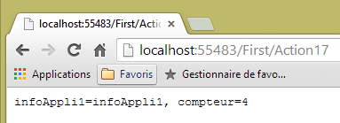
4.11. Late binding of the action model
We have written the following [Action12]:
// Action12
public ContentResult Action12(ActionModel05 model)
{
string errors = getErrorMessagesFor(ModelState);
string text = string.Format("rate={0}, errors={1}", model.Rate, errors);
return Content(text, "text/plain", Encoding.UTF8);
}
Behind the scenes, ASP.NET MVC:
- creates an instance of type [ActionModel05] using its parameterless constructor;
- initializes it with request information that has the same name (case-insensitive) as one of the properties of [ActionModel05].
Sometimes this behavior is not what we want. This is particularly the case when we want to use a specific constructor of the action model. We can then proceed as follows:
// Action18
public ContentResult Action18()
{
ActionModel05 model = new ActionModel05();
TryUpdateModel(model);
string errors = getErrorMessagesFor(ModelState);
string text = string.Format("rate={0}, errors={1}", model.Rate, errors);
return Content(text, "text/plain", Encoding.UTF8);
}
- Line 2: The action no longer receives parameters. Therefore, there is no longer any automatic data binding;
- line 4: we create an instance of the action model ourselves. This is where we could use a different constructor;
- line 5: we initialize the model with the request information. ASP.NET MVC does this work. It does it the same way it would have if the model had been a parameter;
- line 6: we are now in the same situation as in the [Action12] action.
Here is an example of execution:

4.12. Conclusion
Let’s return to the architecture of an ASP.NET MVC application:
 |
A request [1] carries various pieces of information that ASP.NET MVC presents [2a] to the action in the form of a model, which we have called the action model.
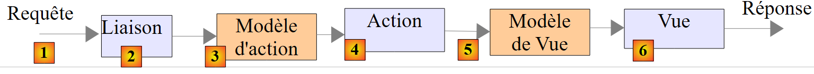 |
- The client’s HTTP request arrives at [1];
- at [2], the information contained in the request is transformed into an action model [3];
- In [4], the action, based on this model, will generate a response. This response will have two components: a view V [6] and the model M for that view [5];
- the view V [6] will use its model M [5] to generate the HTTP response intended for the client.
In the MVC model, the action [4] is part of the C (controller), the view model [5] is the M, and the view [6] is the V.
This chapter has examined the mechanisms linking the information carried by the request—which is inherently strings—to the action’s model, which can be a class with properties of various types. We have also seen that it is possible to validate the model presented to the action. Finally, we have seen how to extend this model to include data from the [Session] and [Application] scopes.
We will now focus on the end of the request processing chain [1]: the creation of the view [6] and its model [5]. These two elements are produced by the action [4].